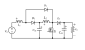
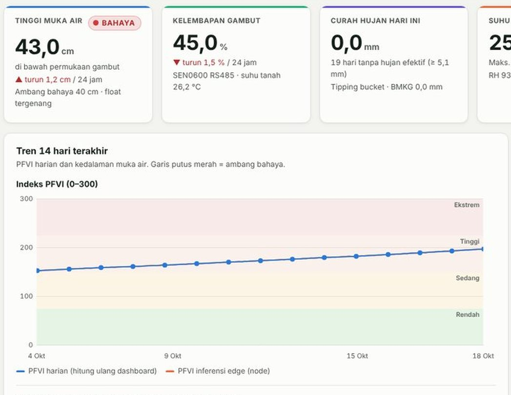
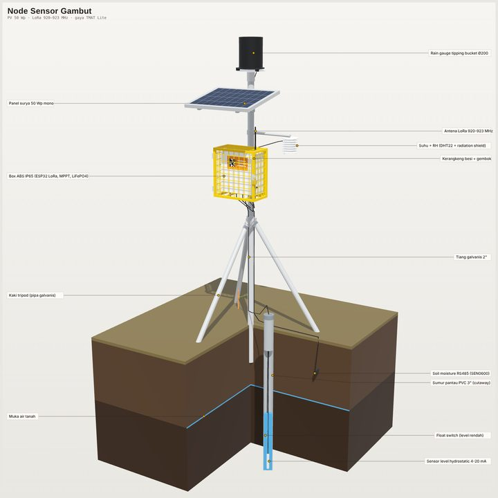

Electrical engineering undergraduate at Universitas Negeri Semarang (UNNES). I design robust controllers for high-gain DC-DC converters and take them from the model to the microcontroller to the bench. Alongside that, I build machine-learning models for building energy.
Robust control of power convertersH∞ voltage control for high step-up DC-DC stages, where right-half-plane zeros and lightly damped resonances limit what a controller can do.
PV and renewable integrationThe converter between a low-voltage source and a DC bus: photovoltaics, fuel cells, storage, and DC microgrids.
Machine learning for energy systemsSurrogate models and multi-objective optimisation that trade energy use against occupant comfort.
Featured projects
H∞ voltage control of a quadratic boost converter, from model to STM32
Undergraduate thesis · 2025–2027
A quadratic boost converter reaches high gain with one switch, but its duty-to-output dynamics are fourth order, non-minimum phase, and barely damped. Most hardware-validated controllers for it need inductor-current sensing.
What I built. An 18 V to 150 V converter designed for continuous conduction, and a mixed-sensitivity H∞ controller that regulates it from the output voltage alone. The weighting functions are derived from the plant's physical limits (its right-half-plane zeros, its resonance, and the sensing chain) instead of being tuned by trial and error.
The same C controller code runs unchanged at every validation stage. I benchmark it against three voltage-mode controllers reproduced from the literature (frequency-response PI, MPSO-tuned PI, PSO-tuned fuzzy PI) under identical scenarios and stability limits. I also designed the board in KiCad and wrote the STM32F407 firmware.

Single-switch quadratic boost topology, gain 1/(1−D)².
18 V → 150 V
8.3× step-up at 167 W, 10 kHz switching, one voltage sensor
100 µs
control period of the 6th-order discrete controller running on an STM32F407
4 controllers
compared on one plant model, one scenario set, one set of stability margins (simulation)
Model-in-the-loop→Software-in-the-loop→Processor-in-the-loop→Hardware prototype · in test
Results so far come from simulation and processor-in-the-loop tests. Experimental data and the full code will be released with the papers.
MATLAB/Simulink · Simscape Electrical · Robust Control Toolbox · C · STM32F407 · KiCadSupervisor: Rizky Ajie Aprilianto, M.Eng.
AI-OBEP: a learned surrogate and multi-objective optimisation for building energy and comfort
Collaboration with UiTM, Malaysia · 2026
Cooling an office well means balancing energy against comfort, and a physics simulation is too slow to sit inside an optimiser.
What I built. The machine-learning pipeline, in collaboration with a PhD researcher at Universiti Teknologi MARA. An XGBoost surrogate predicts HVAC energy from the open ROBOD dataset (NUS, Singapore); its hyperparameters are tuned by three metaheuristics I implemented and compared on an equal budget (PSO, GA, HHO). NSGA-II then searches room layouts and zone setpoints of 24 °C and above for the trade-off between energy and PMV thermal comfort, with SHAP used to check that the model's behaviour is physically sensible.
ROBOD data→XGBoost surrogate, PSO / GA / HHO tuned→NSGA-II: energy vs comfort→Pareto set + SHAP
R² 0.949
on the reference paper's protocol, against 0.933 reported by Lyu et al. (2025)
R² 0.941
on a stricter protocol I added: whole days held out, hourly data
An 800 VDC renewable microgrid for an AI data centre, as an interactive 3D model
Concept study · synthetic data
AI data centres are moving to high-voltage DC distribution. Feeding that bus from solar, wind, storage and hydrogen needs high-gain converters that stay stable as sources and loads swing.
What I built. I proposed the concept and applied my thesis work to it: quadratic converters with H∞ control as the eight interface converters of a 2.4 MW IT "AI-Pod" at an industrial estate in Batang, Central Java. The browser model lays out the PV field, wind turbines, battery, hydrogen island and DC bus, shows power flow by day and night, and steps through four build-out phases from 2027 to 2030. It accompanies a team paper for the LOGRAK 2026 national competition (Tim Hore, UNNES).
SIGAP-Gambut: a solar-powered LoRa sensor network for peat-fire risk
Research competition entry · demo data
Peat fires start underground when the water table drops, usually far from power and mobile coverage. Risk has to be estimated on site, from a node that runs on its own energy.
What I built. The system design, end to end. A field node (TTGO LoRa32, 50 Wp panel, LiFePO4 battery) measures water-table depth, peat moisture, rainfall and temperature, and sends about 20 bytes every ten minutes over LoRa. A receiver forwards to MQTT, a FastAPI service stores readings in SQLite, and a web dashboard recomputes the Peat Fire Vulnerability Index each day and raises alerts.
I also modelled the node as a 53-part parametric 3D design, covering the mast, enclosure, power electronics and monitoring well, generated from one Python script.


Dashboard in demo mode (simulated dry-season data) and the node design.
The dashboard, backend and data contract are working; node firmware and field deployment are the next stage. Prepared for the BPDP student research competition, 2026–2027.
R. A. Aprilianto, Y. L. Sinaga, et al. Journal submission, November 2026.
In preparation
Hardware validation of an H∞-controlled quadratic boost converter
First author. Two companion papers (staged MIL–SIL–PIL verification; digital IIR filtering of the feedback signal) and the AI-OBEP manuscript as co-author.
Experience
Jan – Jun 2026
Engineering intern, PT Rizqi Surya Energi (Solariz)Installed residential rooftop PV systems of 3–5 kWp, including hybrid systems with battery storage. Simulated designs in PVsyst, surveyed sites, and supported inverter monitoring.
Jul 2025 – present
Research assistant, UNNES Electrical Engineering Students Research GroupDesigned wiring diagrams for PV installations, installed systems, and prepared reports, posters and articles.
Mar 2025 – present
Assistant editor, Jurnal Teknik Elektro (UNNES)Handle manuscripts from submission to publication.
2025
Chair, Engineering Research Club, Faculty of EngineeringLed the faculty's student research club for one term.
Other work
2026 – 2027
7th Kibo Robot Programming Challenge (JAXA)Team entry programming the Int-Ball2 free-flying robot in Python and ROS. We work by pull request, and every change is checked against a 20-seed batch run in the simulator before it merges. Repository
2025
Competitions and registered worksSecond gold medal, International Walisongo Science Competition; first place, GEMASTE and the USC national essay competition. Three registered copyrights, including a MATLAB program for a solar-powered battery charging station.